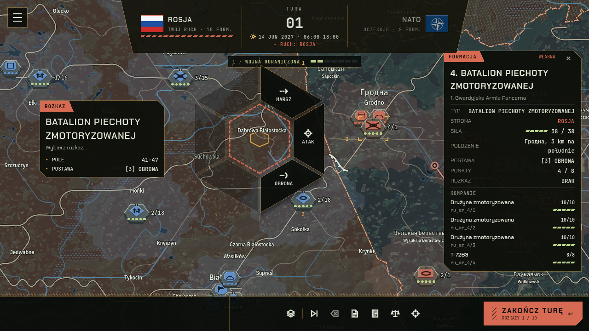
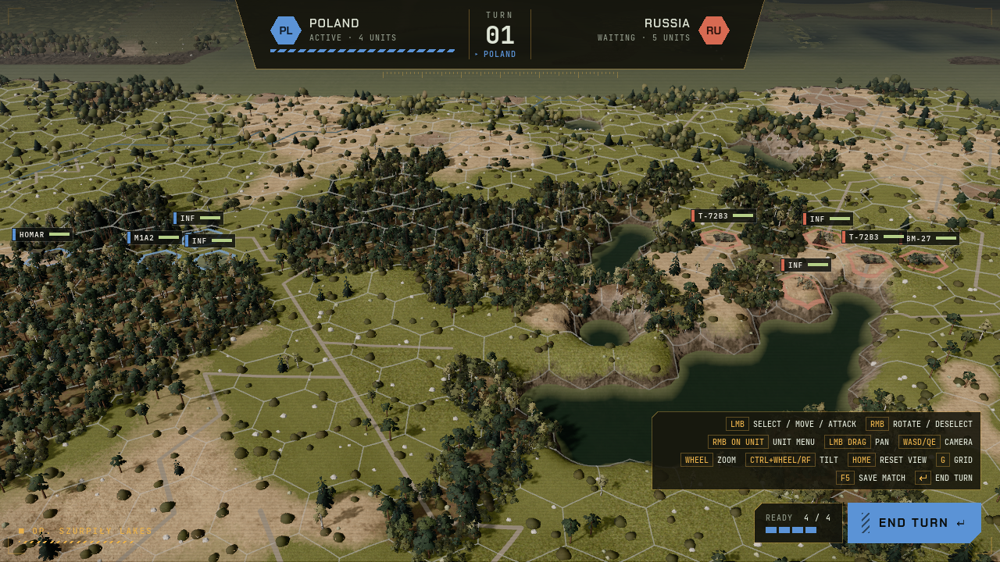

Today the main menu (main_menu.gd) is a centred column of buttons on a flat BG_APP field with the text title “EASTERN FLANK”. The human wants a modern title screen that uses the real logo (assets/branding/logo_light.png, light letters + blue / red wings – blue = own, red = enemy, matching the counter colour rule), the menu on the right, and on the left a darkened staff map that is broken open to show a zoom into a tactical battle – one picture that says “operational layer above, tactical layer below”.
mouse_filter = IGNORE, never captures focus.docs/images/staff_map.png and suwalki_battle.png (Poland is the demo scenario). In game: pre-rendered stills of the two scenes saved as assets (cheap, no second 3D scene → 60 FPS safe), optionally a slow 1.5 % Ken-Burns drift on each layer. Language-neutral: the staff-map still must be rendered without HUD text; the stills here include HUD only because they are screenshots.Shared by all variants: dimming = SCRIM_SCREEN rgba(0,0,0,.62) + vignette VIGNETTE_EDGE; screen brackets and scanlines from ScreenDecor; right column gradient from transparent to PANEL_STRONG; buttons keep the MenuStyle.button colours (hover amber 12 % fill + amber border, pressed amber fill + INK text, focus 2 px amber ring, disabled HUD_MUTED). NEW TOKEN: none. New: a 9–12 px chamfer on the item (as the country card / notice frames) and a 4 px amber hover bar.
The dimmed staff map fills the screen. A jagged shard – the “crack” – opens in its lower left and is filled with the undimmed tactical battle. A hex marker on the map with two dashed amber zoom lines funnels into the shard, so the eye reads “this hex → this fight”. Menu items are chamfered plates, numbered 01–05.



TURN-BASED STRATEGY · 2027
Item states (same plate, 340×52):
Pages – the column widens leftwards over the map (the crack stays visible), content swaps; Esc / Back returns. Scenario page: list + preview as today (preview 380×250), Back + Start in one row. Settings: same column width as the main page.
| Part | Spec (1440×900) |
|---|---|
| Menu column | x 940–1440, gradient transparent → PANEL_STRONG at 26 %; padding 96 left / 64 right; content vertically centred; 340 px wide items (as today’s BUTTON_WIDTH) |
| Logo | logo_light.png 340×101, then 6 px HatchBar (AMBER, 340 px, as today), tagline JetBrains Mono 11 px, tracking .2em, HUD_MUTED |
| Item | 340×52, gap 8, chamfer 12 px (top-right and bottom-left corners), 1 px LINE, fill PANEL; index JetBrains Mono 11 px HUD_MUTED; label Chakra Petch 600 16 px, tracking .16em, HUD_TEXT; chevron right |
| Hover / focus | amber 12 % fill, AMBER 90 % border, 4 px inner left bar, text AMBER; transition 120 ms. Focus ring 2 px AMBER. Pressed: AMBER fill, INK text |
| Staff map layer | full-bleed still, brightness .5, saturation .65, 1.5 px blur, + SCRIM_SCREEN, + vignette |
| Shard | polygon of 12 points (jagged, no curves), tactical still at brightness .82 (the only bright area), 2 px AMBER 70 % bevelled outline, soft black drop shadow; ≈ 45 % of the width, bottom-left |
| Zoom funnel | hex marker 44 px (flat-sided, AMBER 2 px, 14 % fill) + two 1.5 px dashed lines AMBER 50 % to the shard |
| Captions | JetBrains Mono 11 px, AMBER, plate PANEL + LINE |
| Motion | on load: map fades in 400 ms, shard “opens” (clip scales from the hex, 500 ms), column slides 24 px from the right; idle: 60 s linear 1.5 % drift on both stills (off at 5 FPS background) |
Godot notes: rebuild main_menu.gd _build() as TextureRect map + TextureRect shard with a Polygon2D/clip_children mask (or a pre-masked PNG with alpha) + a Line2D outline; column = existing MenuStyle buttons with a new chamfered StyleBoxFlat variant (same as StaffMapWindow chamfers) and HatchBar; ScreenDecor stays. Item numbers are optional labels, not translation keys.
Hexagon is the game’s grid, so the tactical zoom is a large hexagonal lens centred left; around it the staff map with concentric fading hex rings (a radar / zoom-in feel). Menu is a borderless list with hairline dividers – calmer, more editorial; the hex lens is the hero.
TURN-BASED STRATEGY · 2027
| Part | Spec |
|---|---|
| Lens | regular hexagon, circumradius 260 px, centre (480, 470); tactical still inside (brightness .82); 2.5 px AMBER 80 % outline + two dashed rings 40 % / 22 % / 10 % (radius ×1.17, ×1.35, ×1.55) |
| List | 360×56 rows, no plate, 1 px divider DIVIDER, hover = left amber 3 px bar + 16 % amber gradient to the right; same fonts as A |
| Trade-off | Strong hex identity but the staff map is mostly covered by rings and the lens (≈ 35 % visible); fewer chamfers, so less like the HUD plates. “Hexes are mechanics only” (memory): the hex here is a UI frame, not map geometry – acceptable but check you agree. |
No frames, no captions. The staff map is full-bleed; one long diagonal rift runs from the left edge to the lower middle, and everything below it is the tactical battle. The logo is larger (420 px) and the menu is plain text lines with a sliding amber marker – the quietest, cheapest to build (one polygon mask, one line).
TURN-BASED STRATEGY · 2027
| Part | Spec |
|---|---|
| Rift | one 9-point polyline, 2 px AMBER 75 %; area under it = tactical still; above = dimmed map. No captions, no funnel |
| Menu | text lines 380×56, hover marker as B; no numbering |
| Trade-off | Cleanest and cheapest; weakest “zoom” cue (no pointer from a map spot to the battle). |